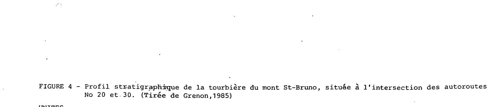
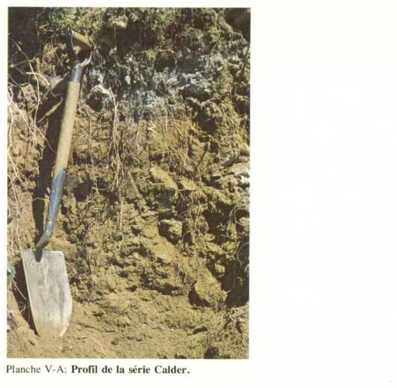
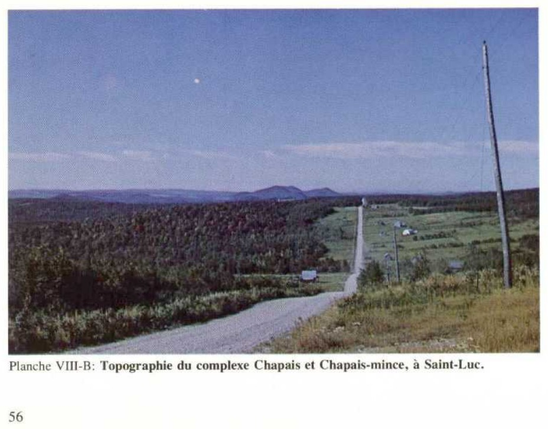
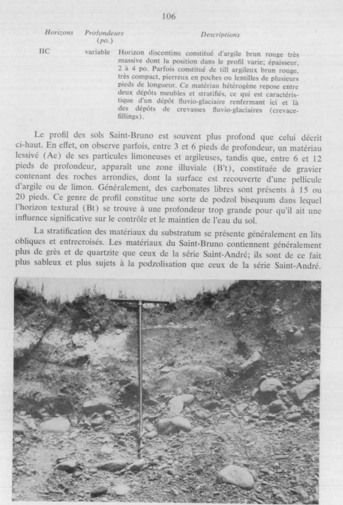
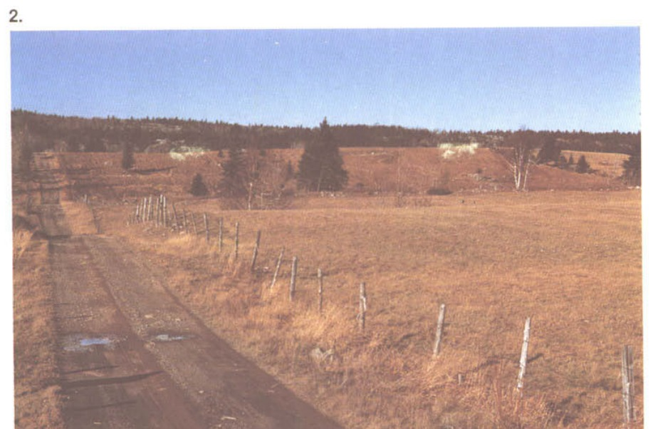
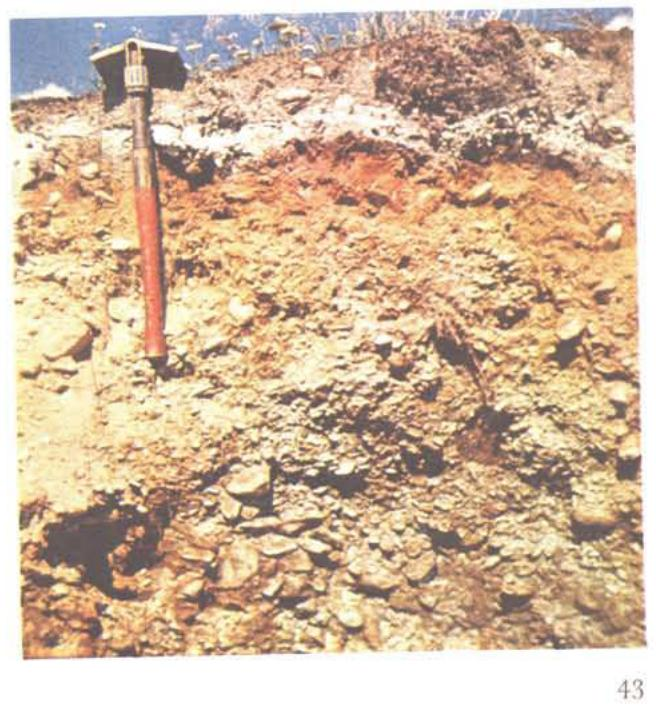
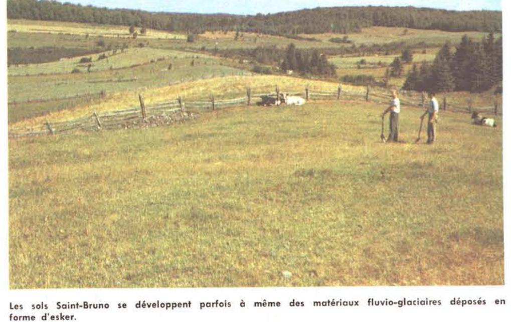

Identification & Caractéristiques Générales
Les sols de la série Saint-Bruno se développent sur des dépôts meubles fluvio-glaciaires, principalement constitués de graviers sableux et pierreux. Ces matériaux originels, d'une nature généralement acide, proviennent d'une fraction lithologique variée comprenant du quartz, des microgrès, des schistes ardoisiers, des quartzites, ainsi que des apports de roches intrusives laurentiennes telles que le granit et le gneiss. Géomorphologiquement, ces dépôts s'observent sur le plateau appalachien sous forme de kames, d'eskers, de terrasses fluvio-glaciaires ou de formations de contact glaciaire. Ils occupent des positions topographiques variées, s'accrochant aux flancs des reliefs ou épousant le fond des vallées et le réseau hydrographique, avec des pentes généralement modérément vallonnées à irrégulières, variant de 3 à 9 pour cent, et pouvant atteindre des déclivités plus fortes selon les phases cartographiques.
Sur le plan morphologique et hydropédologique, les profils pédologiques présentent une texture dominante de loam sablo-graveleux, assortie d'une pierrosité variant de modérée à très pierreuse. En raison de la forte proportion de graviers et de cailloux caractérisant le matériau parental et le substratum, le drainage naturel est qualifié de bon à excessif. La perméabilité est élevée, ce qui entraîne une rétention en eau faible et prédispose les profils à des épisodes de sécheresse estivale. La profondeur effective du sol est variable, allant de profils profonds à des phases minces où le roc ou un substratum caillouteux se retrouve à faible distance de la surface. La réaction chimique du sol est acide, et le profil peut présenter des discontinuités lithologiques prononcées liées aux modes de mise en place du dépôt fluvio-glaciaire.
Les aptitudes agronomiques des sols de la série Saint-Bruno sont fortement restreintes par leur pierrosité élevée, leur texture grossière et leur régime hydrique excédentaire ou déficitaire selon la saison, se traduisant par une sensibilité marquée à la sécheresse. Pour les phases minces ou fortement accidentées, la mise en valeur agricole est limitée, voire non viable, ces secteurs étant généralement dévolus à la production forestière ou occupés par des boisés mixtes composés d'épinettes blanches, de sapins, de peupliers et d'érables rouges. Lorsque cultivés, ces sols imposent des contraintes majeures à la machinerie agricole en raison des cailloux et nécessitent des apports réguliers de amendements calciques pour corriger l'acidité, ainsi qu'une gestion rigoureuse de la fertilisation pour contrer la faible capacité de rétention en éléments nutritifs inhérente à ces textures sablo-graveleuses.
Caractères Distinctifs & Morphologie Génétique (Comté de Dorchester — Page 62)
- Topographie : fortement vallonnée (kames et eskers) à subhorizontale (terrasses)
- Drainage : bon à excessif
- Pierrosité : modérément pierreux à très pierreux — 1 et 2
- Grand-groupe génétique : podzol
- Degré d'érosion : nul
- Classes d'utilisation : (C) 4S à 7T (Q) 4b à 6
- Association géographique : Calder
- Végétation naturelle : sapins, merisiers, peupliers, érables
Classification Taxonomique & Environnement Pédologique
| Ordre Pédologique | Podzolique |
|---|---|
| Grand Groupe (SCSS) | Podzol humo-ferrique |
| Sous-Groupe Taxonomique | Podzol humo-ferrique orthique |
| Famille Pédologique | Squelettique-sableuse, mixte sableux, acide |
| Mode de Dépôt Parental | Fluvio-glaciaire |
| Classe de Drainage Naturel | Rapidement drainé |
| Régime Thermique & Humidité | Frais / Semi-aride |
Description Morphologique du Profil Type
Séquences génétiques des horizons pédologiques caractérisant le profil type représentatif de la série Saint-Bruno :
Profil forestier / boisé — Comté de Dorchester
✓ Source : Comté de Dorchester — Page 62Couleur Munsell : 10YR 4/3, 5YR 2/1
Structure & Consistance : Polyédrique à granulaire
Description morphologique : Humus mor à mull brun foncé (10YR 4/3) à noir (5YR 2/1); sans structure; friable; pH: 4.7 — 5.1.
Couleur Munsell : 5YR 5/1, 10YR 5/2
Structure & Consistance : Polyédrique à granulaire
Description morphologique : Loam sablo-graveleux gris (5YR 5/1) à brun-gris (10YR 5/2); sans structure; friable; pH 4.0 — 4.3.
Couleur Munsell : 5YR 3/2, 10YR 4/3
Structure & Consistance : Polyédrique à granulaire
Description morphologique : Loam graveleux brun-rouge foncé (5YR 3/2) à brun foncé (10YR 4/3); sans structure; friable; pH: 4.8 — 5.1.
Couleur Munsell : 10YR 5/8, 10YR 4/4
Structure & Consistance : Polyédrique à granulaire
Description morphologique : Loam graveleux brun-jaune (10YR 5/8) à brun-jaune foncé (10YR 4/4); sans structure; friable; pH: 5.0 — 5.3.
Couleur Munsell : 10YR 7/3
Structure & Consistance : Polyédrique à granulaire
Description morphologique : Loam graveleux brun très pâle (10YR 7/3); sans structure; friable; pH: 5.1 — 5.5.
Couleur Munsell : 10YR 6/4
Structure & Consistance : Polyédrique à granulaire
Description morphologique : Loam graveleux à sable grossier brun-jaune clair (10YR 6/4); sans structure; friable; pH: 5.3 — 5.7.
Profil naturel (vierge) — Comté de Kamouraska
✓ Source : Comté de Kamouraska — Page 103Couleur Munsell : 7.5YR 3/2
Structure & Consistance : Polyédrique à granulaire
Description morphologique : Mousse de sphaignes sur un horizon d'humus brun foncé à noir (7.5YR 3/2; 2/0 humide), peu décomposé (type mor), fibreux, friable; limites nettes et continues; pH 3.5. Surmonté généralement de gros blocs rocheux.
Couleur Munsell : 10YR 8/1
Structure & Consistance : Polyédrique à granulaire
Description morphologique : Loam sableux fin à sable loameux blanc à gris (10YR 8/1; 6/1 humide), ferme mais friable, sans structure, avec pierres; limites abruptes et irrégulières, avec poches pouvant atteindre 8 po. d'épaisseur; pH 4.1.
Couleur Munsell : 10YR 6/6
Structure & Consistance : Finement granulaire à particulaire
Description morphologique : Loam sableux fin graveleux à sable loameux graveleux jaune brun à brun jaune (10YR 6/6; 5/6 humide), friable; structure finement granulaire à particulaire; limites sinueuses; pH 5.2.
Couleur Munsell : 10YR 6/6
Structure & Consistance : Finement granulaire peu développée à particulaire
Description morphologique : Loam sableux fin graveleux à sable graveleux et pierreux jaune brun à brun jaune (10YR 6/6; 5/6 humide); structure finement granulaire peu développée à particulaire, avec cailloux et pierres nombreuses; limites graduelles et sinueuses; pH 5.5.
Couleur Munsell : 10YR 7/3
Structure & Consistance : Particulaire
Description morphologique : Loam sableux à loam sableux fin ou à sable loameux, graveleux et pierreux, brun très pâle à brun (10YR 7/3; 5/3 humide), ferme légèrement compact; structure particulaire, limites graduelles et sinueuses; pH 5.4.
Couleur Munsell : 10YR 6/4
Structure & Consistance : Particulaire lâche à structure massive
Description morphologique : Sable très grossier à sable loameux fin, graveleux et pierreux, brun jaune pâle à brun jaune (10YR 6/4; 4/4 humide), ferme à friable; structure particulaire lâche à structure massive; devenant parfois dur et cassant (brittle) à l'état sec. Cette légère induration est considérée comme un début de fragipan. La présence de ce dernier et son développement semblent liés à une texture sableuse à grains fins et à, un solum riche en limon. pH 5.1.
Profil forestier / boisé — Comté de L'islet
✓ Source : Comté de L'islet — Page 60Couleur Munsell : 5YR 2/0
Structure & Consistance : Polyédrique à granulaire
Description morphologique : Mousse de sphaignes sur un horizon d'humus noir à brun foncé (7,5 YR 2/0 h; 3/2 s), peu décomposé (mor), fibreux; limite abrupte régulière; gros blocs rocheux en surface; pH 3,5.
Couleur Munsell : 10YR 6/1
Structure & Consistance : Massive
Description morphologique : Loam sableux fin à sable loameux gris à blanc (10 YR 6/1 h; 8/1 s); ferme mais friable; structure massive; avec pierres; limite abrupte et irrégulière; pH 4,1.
Couleur Munsell : 10YR 5/6
Structure & Consistance : Granulaire à particulaire fine
Description morphologique : Loam sableux fin graveleux à sable loameux graveleux brun-jaune à jaune-brun (10 YR 5/6 h; 6/6 s); structure granulaire à particulaire fine; friable; limite ondulée; pH 5,2.
Couleur Munsell : 10YR 5/6
Structure & Consistance : Granulaire fine peu développée à particulaire
Description morphologique : Loam sableux fin graveleux à sable graveleux et pierreux brun-jaune à jaune-brun (10 YR 5/6 h; 6/6 s); structure granulaire fine peu développée à particulaire; friable; avec cailloux et pierres nombreuses; limite graduelle ondulée; pH 5,5.
Couleur Munsell : 10YR 5/3
Structure & Consistance : Particulaire consistance ferme
Description morphologique : Loam sableux à loam sableux fin ou à sable loameux; graveleux et pierreux; brun à brun très pâle (10 YR 5/3 h; 7/3 s); structure particulaire consistance ferme; limite graduelle et ondulée; pH 5,4.
Couleur Munsell : 10YR 4/4
Structure & Consistance : Particulaire lâche à structure massive
Description morphologique : Sable très grossier à sable loameux fin graveleux et pierreux; brun-jaune foncé à brun-jaune clair (10 YR 4/4 h; 6/4 s); ferme à friable; structure particulaire lâche à structure massive; devenant parfois dur et un peu cassant (brittle) à l'état sec; pH 5,1.
Couleur Munsell : Non précisée
Structure & Consistance : Polyédrique à granulaire
Description morphologique : Horizon discontinu, dont la position et l'épaisseur (5 à 10 cm) sont variables dans le profil; il est constitué parfois d'argile brun-rouge très massive et parfois de till argileux brun-rouge, très compact, pierreux et en poches de plusieurs pieds de longueur. Ces matériaux reposent entre deux dépôts grossiers meubles et stratifiés.
Profil forestier / boisé — Comté de Rivière-du-loup
✓ Source : Comté de Rivière-du-loup — Page 55Couleur Munsell : 7.5YR 2/0
Structure & Consistance : Polyédrique à granulaire
Description morphologique : Mousse de sphaignes sur un horizon d'humus noir à brun foncé (7.5 YR 2/0 h; 3/2 s), peu décomposé (mor), fibreux; limite abrupte régulière; gros blocs rocheux en surface; pH : 3,5.
Couleur Munsell : 10YR 6/1
Structure & Consistance : Massive avec pierres
Description morphologique : Loam sableux fin à sable loameux gris à blanc (10 YR 6/1 h; 8/1 s); ferme mais friable; structure massive avec pierres; limite abrupte et irrégulière; pH : 4,1.
Couleur Munsell : 10YR 5/6
Structure & Consistance : Granulaire à particulaire fine
Description morphologique : Loam sableux fin graveleux à sable loameux graveleux brun-jaune à jaune-brun (10 YR 5/6 h; 6/6 s); structure granulaire à particulaire fine; friable; limite ondulée; pH : 5,2.
Couleur Munsell : 10YR 5/6
Structure & Consistance : Granulaire fine peu développée à particulaire
Description morphologique : Loam sableux fin graveleux à sable graveleux et pierreux brun-jaune à jaune-brun (10 YR 5/6 h; 6/6 s); structure granulaire fine peu développée à particulaire; friable; avec cailloux et pierres nombreuses; limite graduelle ondulée; pH : 5,5.
Couleur Munsell : 10YR 5/3
Structure & Consistance : Particulaire
Description morphologique : Loam sableux à loam sableux fin ou à sable loameux graveleux et pierreux, brun à brun très pâle (10 YR 5/3 h; 7/3 s); structure particulaire; consistance ferme; limite graduelle et ondulée; pH : 5,4.
Couleur Munsell : 10YR 4/4
Structure & Consistance : Particulaire lâche à structure massive
Description morphologique : Sable très grossier à sable loameux fin graveleux et pierreux, brun-jaune foncé à brun-jaune clair (10 YR 4/4 h; 6/4 s); ferme à friable; structure particulaire lâche à structure massive; devenant parfois dur et un peu cassant (brittle) à l'état sec; pH : 5,1.
Couleur Munsell : Non précisée
Structure & Consistance : Polyédrique à granulaire
Description morphologique : Horizon discontinu, dont la position et l'épaisseur (5 à 10 cm) sont variables dans le profil; il est constitué parfois d'argile brun-rouge très massive et parfois de till argileux brun-rouge, très compact, pierreux et en poches de plusieurs mètres de longueur. Ces matériaux reposent entre deux dépôts grossiers meubles et stratifiés.
Profil forestier / boisé — Comté de Bellechasse
✓ Source : Comté de Bellechasse — Page 43Couleur Munsell : 7.5YR 3/2
Structure & Consistance : Polyédrique à granulaire
Description morphologique : Humus mor et fibreux, brun foncé à noir (7.5YR 3/2 à 2/0); friable et perméable; présence de grosses roches en surface; pH 3.8.
Couleur Munsell : 10YR 6/1
Structure & Consistance : Particulaire
Description morphologique : Loam sableux et pierreux de couleur grise (10YR 6/1); structure particulaire; limites irrégulières et souvent en poches; friable et perméable; pH 4.1.
Couleur Munsell : 10YR 5/6
Structure & Consistance : Finement granulaire à particulaire
Description morphologique : Loam sablo-graveleux à sable loameux et graveleux de couleur brun jaune (10YR 5/6); structure finement granulaire à particulaire; friable et perméable; pH 5.2.
Couleur Munsell : 10YR 6/6
Structure & Consistance : Particulaire
Description morphologique : Loam sablo-graveleux à sable graveleux et pierreux de couleur jaune brun (10YR 6/6); structure particulaire; pierres nombreuses; friable et perméable; pH 5.5.
Couleur Munsell : 10YR 7/3
Structure & Consistance : Particulaire
Description morphologique : Loam sablo-graveleux et pierreux, de couleur brun très pâle (10YR 7/3); structure particulaire; friable et perméable; pH 5.3.
Couleur Munsell : 10YR 6/4
Structure & Consistance : Particulaire et parfois massive
Description morphologique : Sable grossier, graveleux et pierreux, de couleur brun jaune clair (10YR 6/4); structure particulaire et parfois massive; friable et perméable; pH 5.0.
Profils Photographiques & Planches de Terrain
Documents iconographiques, figures pédologiques et coupes de terrain documentées dans les mémoires d'inventaire pour de la série Saint-Bruno :








Propriétés Physico-Chimiques & Analyses de Laboratoire
| Horizon | Prof. limite | pH (H₂O) | M.O. % | C tot. % | N tot. % | C.E.C. (cmol/kg) | Sable % | Limon % | Argile % | P Meh3 (mg/kg) | K (cmol/kg) | Ca (cmol/kg) | MVA (g/cm³) |
|---|---|---|---|---|---|---|---|---|---|---|---|---|---|
| Ap1 | — | 5.79 | 7.24 | 4.2 | 0.34 | 21.0 | 61.1 | 22.5 | 16.4 | 81.9 | 0.4 | 6.8 | 1.02 |
| Ap2 | — | 6.01 | 5.21 | 3.02 | 0.24 | 18.7 | 62.4 | 21.4 | 16.2 | 55.4 | 0.22 | 6.24 | 1.19 |
| B | — | 6.11 | 3.26 | 1.89 | 0.13 | 15.9 | 67.8 | 19.0 | 13.2 | 27.5 | 0.11 | 3.92 | 1.3 |
Particularités Régionales, Phases & Variantes Pédologiques
Déclinaisons régionales, faciès texturaux, phases d'érosion ou de pierrosité et variantes cartographiées par étude pour de la série Saint-Bruno :
| Étude Régionale | Symbole | Appellation / Phase / Variante | Différenciation avec la série type (Analyse pédologique) |
|---|---|---|---|
| Comté de Bellechasse | B |
Saint-Bruno loam sableux graveleux | Modalité modale de référence (type de base de la série). |
B-m |
Saint-Bruno loam sableux graveleux mince | Phase mince sur substrat rocheux (< 50 cm). | |
| Comté de Dorchester | B |
Saint-Bruno loam sableux graveleux | Conforme à la série type de référence (caractéristiques texturales et drainage identiques). |
B-m |
Saint-Bruno loam sableux graveleux mince | Phase mince sur substrat rocheux (< 50 cm). | |
| Comté de Kamouraska | B |
Saint-Bruno loam sablo-graveleux | Faciès loameux plus fin et équilibré que le loam sableux de référence (meilleure rétention en eau et nutriments). |
B-m |
Saint-Bruno loam sablo-graveleux phase mince | Phase mince sur substrat rocheux (< 50 cm); Faciès loameux plus fin et équilibré que le loam sableux de référence (meilleure rétention en eau et nutriments). | |
B-t |
Saint-Bruno loam sablo-graveleux phase en terrasses | Faciès loameux plus fin et équilibré que le loam sableux de référence (meilleure rétention en eau et nutriments). | |
| Comté de L'islet | B |
Saint-Bruno loam sableux graveleux | Conforme à la série type de référence (caractéristiques texturales et drainage identiques). |
B-m |
Saint-Bruno loam sableux graveleux mince | Phase mince sur substrat rocheux (< 50 cm). | |
B-t |
Saint-Bruno loam sableux graveleux en terrasses | Conforme à la série type de référence (caractéristiques texturales et drainage identiques). | |
| Comté de Rivière-du-loup | B |
Saint-Bruno loam sablo-graveleux | Faciès loameux plus fin et équilibré que le loam sableux de référence (meilleure rétention en eau et nutriments). |
B-m |
Saint-Bruno loam sablo-graveleux phase mince | Phase mince sur substrat rocheux (< 50 cm); Faciès loameux plus fin et équilibré que le loam sableux de référence (meilleure rétention en eau et nutriments). | |
B-t |
Saint-Bruno loam sablo-graveleux phase de terrasses | Faciès loameux plus fin et équilibré que le loam sableux de référence (meilleure rétention en eau et nutriments). | |
Bs |
Saint-Bruno sable loameux | Faciès sableux très filtrant et pauvre en éléments nutritifs vis-à-vis du loam sableux de référence. |
Distribution Pédo-Paysagère & Représentativité Cartographique (Couverture PPS 2026)
- Accumulations organiques (TNH) — co-occurrente dans 318 polygone(s)
- Alluvion non différenciée à surface sableuse (ALL) — co-occurrente dans 240 polygone(s)
- Affleurements rocheux (ARR) — co-occurrente dans 106 polygone(s)
Aptitudes Agronomiques, Hydropédologie & Conservation des Sols
Indicateurs Hydropédologiques & Vulnérabilité à l'Érosion (BDHP 2026)
Interprétation BDHP : Potentiel de ruissellement faible. Sols à infiltration rapide (sables profonds, graviers bien drainés).
Classement selon l'Inventaire des Terres du Canada (ITC / CLI) : Classe 3w.
- Potentiel agricole : Terroir adapté aux cultures régionales selon la texture dominante et la régie de drainage.
- Contraintes majeures : Rapidement drainé. Risque d'engorgement temporaire ou d'excès d'eau printanier.
- Gestion & Aménagement : Drainage souterrain ou superficiel préconisé sur les terres planes. Chaulage et apport organique régulier selon les bilans agronomiques.
- Cultures adaptées : Grandes cultures (maïs, soya, céréales), prairies fourragères et cultures maraîchères selon le contexte géomorphologique.